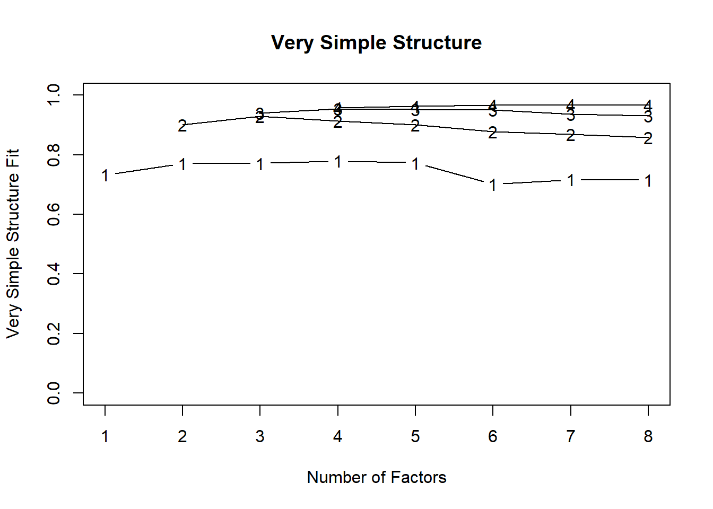
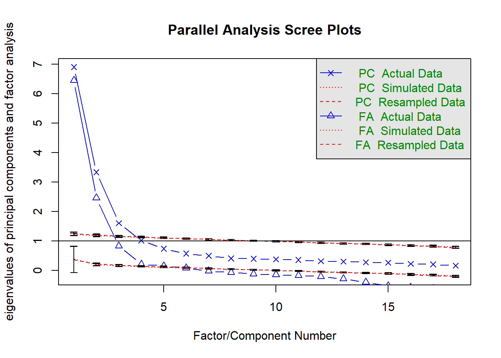
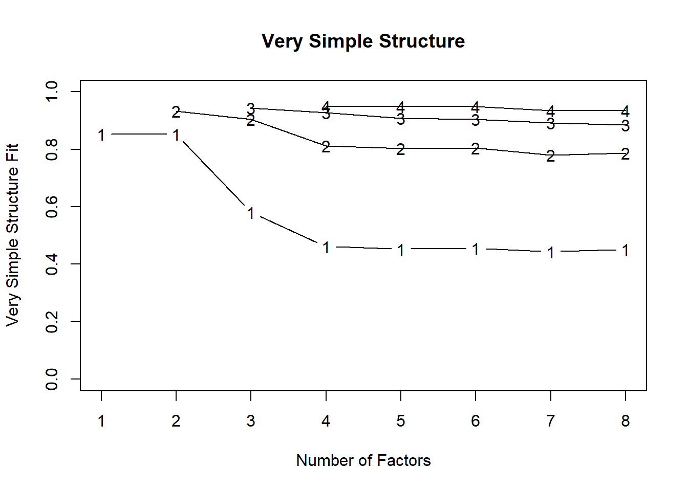
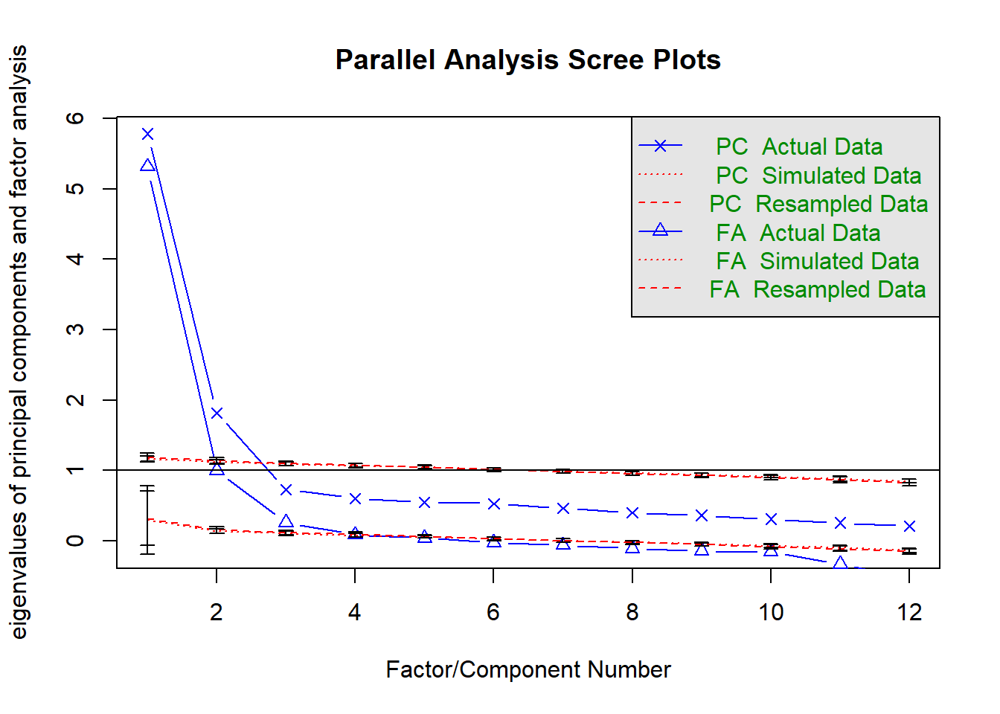

library(psych)
library(lavaan)
source("baseline-datasetup.R")
motifactor_df <- df %>% dplyr::select(matches("T1")) %>%
select(matches("_0")) %>%
select(matches("intrinsic|identified|integrated|introjected|extrinsic|amotivation"))
# factorLoadingDiamondCIplot(motifactor_fa)
# motifactor_df %>% psych::principal(nfactors = 6)
psych::vss(motifactor_df)
##
## Very Simple Structure
## Call: psych::vss(x = motifactor_df)
## VSS complexity 1 achieves a maximimum of 0.78 with 4 factors
## VSS complexity 2 achieves a maximimum of 0.93 with 3 factors
##
## The Velicer MAP achieves a minimum of 0.03 with 4 factors
## BIC achieves a minimum of -201.56 with 8 factors
## Sample Size adjusted BIC achieves a minimum of -84.03 with 8 factors
##
## Statistics by number of factors
## vss1 vss2 map dof chisq prob sqresid fit RMSEA BIC SABIC complex
## 1 0.73 0.00 0.056 135 5111 0.0e+00 17.2 0.73 0.179 4158 4587 1.0
## 2 0.77 0.90 0.034 118 2644 0.0e+00 6.4 0.90 0.136 1811 2186 1.2
## 3 0.77 0.93 0.026 102 1417 1.9e-230 3.8 0.94 0.106 697 1021 1.3
## 4 0.78 0.91 0.026 87 790 6.7e-114 2.7 0.96 0.084 176 452 1.3
## 5 0.77 0.90 0.031 73 595 9.2e-83 2.3 0.96 0.079 79 311 1.4
## 6 0.70 0.88 0.037 60 250 4.7e-25 2.0 0.97 0.052 -174 17 1.4
## 7 0.72 0.87 0.042 48 167 4.1e-15 1.8 0.97 0.047 -172 -19 1.5
## 8 0.72 0.86 0.057 37 60 1.0e-02 1.7 0.97 0.023 -202 -84 1.5
## eChisq SRMR eCRMS eBIC
## 1 9960.0 0.1671 0.178 9007
## 2 2049.9 0.0758 0.086 1217
## 3 642.3 0.0424 0.052 -78
## 4 234.1 0.0256 0.034 -380
## 5 131.4 0.0192 0.028 -384
## 6 50.4 0.0119 0.019 -373
## 7 23.8 0.0082 0.015 -315
## 8 8.8 0.0050 0.010 -252
motifactor_df %>% psych::fa.parallel(error.bars = TRUE)
## Parallel analysis suggests that the number of factors = 6 and the number of components = 3
motifactor_lavaanmodel_3factors <- '
autonomous =~ PA_identified_01_T1 + PA_identified_02_T1 + PA_identified_03_T1 +
PA_integrated_01_T1 + PA_integrated_02_T1 + PA_integrated_03_T1 +
PA_intrinsic_01_T1 + PA_intrinsic_02_T1 + PA_intrinsic_03_T1
controlled =~ PA_extrinsic_01_T1 + PA_extrinsic_02_T1 + PA_extrinsic_03_T1 +
PA_introjected_01_T1 + PA_introjected_02_T1
amotivation =~ PA_amotivation_01_T1 + PA_amotivation_02_T1 + PA_amotivation_03_T1 + PA_amotivation_04_T1
'
motifactors_3 <- lavaan::cfa(motifactor_lavaanmodel_3factors, motifactor_df)
motifactor_lavaanmodel_4factors <- '
autonomous =~ PA_identified_01_T1 + PA_identified_02_T1 + PA_identified_03_T1 +
PA_integrated_01_T1 + PA_integrated_02_T1 + PA_integrated_03_T1 +
PA_intrinsic_01_T1 + PA_intrinsic_02_T1 + PA_intrinsic_03_T1
introjected =~ PA_introjected_01_T1 + PA_introjected_02_T1
extrinsic =~ PA_extrinsic_01_T1 + PA_extrinsic_02_T1 + PA_extrinsic_03_T1
amotivation =~ PA_amotivation_01_T1 + PA_amotivation_02_T1 + PA_amotivation_03_T1 + PA_amotivation_04_T1
'
motifactors_4 <- lavaan::cfa(motifactor_lavaanmodel_4factors, motifactor_df)
motifactor_lavaanmodel_6factors <- '
identified =~ PA_identified_01_T1 + PA_identified_02_T1 + PA_identified_03_T1
integrated =~ PA_integrated_01_T1 + PA_integrated_02_T1 + PA_integrated_03_T1
intrinsic =~ PA_intrinsic_01_T1 + PA_intrinsic_02_T1 + PA_intrinsic_03_T1
introjected =~ PA_introjected_01_T1 + PA_introjected_02_T1
extrinsic =~ PA_extrinsic_01_T1 + PA_extrinsic_02_T1 + PA_extrinsic_03_T1
amotivation =~ PA_amotivation_01_T1 + PA_amotivation_02_T1 + PA_amotivation_03_T1 + PA_amotivation_04_T1
'
motifactors_6 <- lavaan::cfa(motifactor_lavaanmodel_6factors, motifactor_df)
motifactor_lavaanmodel_5factors <- '
identified =~ PA_identified_01_T1 + PA_identified_02_T1 + PA_identified_03_T1
intrinsic =~ PA_intrinsic_01_T1 + PA_intrinsic_02_T1 + PA_intrinsic_03_T1
introjected =~ PA_introjected_01_T1 + PA_introjected_02_T1
extrinsic =~ PA_extrinsic_01_T1 + PA_extrinsic_02_T1 + PA_extrinsic_03_T1
amotivation =~ PA_amotivation_01_T1 + PA_amotivation_02_T1 + PA_amotivation_03_T1 + PA_amotivation_04_T1
'
motifactors_5 <- lavaan::cfa(motifactor_lavaanmodel_5factors, motifactor_df)
lavaan::fitmeasures(motifactors_3, c("rmsea","cfi","tli","rni","rfi","ifi","srmr","gfi"))
## rmsea cfi tli rni rfi ifi srmr gfi
## 0.112 0.857 0.835 0.857 0.824 0.858 0.108 0.823
lavaan::fitmeasures(motifactors_4, c("rmsea","cfi","tli","rni","rfi","ifi","srmr","gfi"))
## rmsea cfi tli rni rfi ifi srmr gfi
## 0.086 0.917 0.902 0.917 0.890 0.917 0.050 0.881
lavaan::fitmeasures(motifactors_6, c("rmsea","cfi","tli","rni","rfi","ifi","srmr","gfi"))
## rmsea cfi tli rni rfi ifi srmr gfi
## 0.077 0.938 0.921 0.938 0.909 0.938 0.043 0.907
lavaan::fitmeasures(motifactors_5, c("rmsea","cfi","tli","rni","rfi","ifi","srmr","gfi"))
## rmsea cfi tli rni rfi ifi srmr gfi
## 0.067 0.956 0.943 0.956 0.931 0.957 0.040 0.943
anova(motifactors_3, motifactors_4, motifactors_6, motifactors_5)
## Warning in lavTestLRT(object = <S4 object of class structure("lavaan",
## package = "lavaan")>, : lavaan WARNING: some models are based on a
## different set of observed variables
## Chi Square Difference Test
##
## Df AIC BIC Chisq Chisq diff Df diff Pr(>Chisq)
## motifactors_5 80 438.50
## motifactors_6 120 829.58 391.07 40 < 2.2e-16 ***
## motifactors_4 129 1079.16 249.59 9 < 2.2e-16 ***
## motifactors_3 132 1771.55 692.39 3 < 2.2e-16 ***
## ---
## Signif. codes: 0 '***' 0.001 '**' 0.01 '*' 0.05 '.' 0.1 ' ' 1
modindices(motifactors_6) %>% arrange(-mi)
## lhs op rhs mi
## 1 PA_integrated_03_T1 ~~ PA_intrinsic_03_T1 1.247137e+02
## 2 integrated =~ PA_identified_03_T1 9.405551e+01
## 3 PA_integrated_03_T1 ~~ PA_intrinsic_01_T1 8.787410e+01
## 4 identified =~ PA_intrinsic_01_T1 8.725712e+01
## 5 PA_identified_01_T1 ~~ PA_identified_02_T1 8.064625e+01
## 6 PA_amotivation_03_T1 ~~ PA_amotivation_04_T1 6.818830e+01
## 7 PA_intrinsic_02_T1 ~~ PA_intrinsic_03_T1 5.652322e+01
## 8 introjected =~ PA_intrinsic_01_T1 5.079863e+01
## 9 intrinsic =~ PA_integrated_03_T1 4.696973e+01
## 10 integrated =~ PA_identified_02_T1 4.247099e+01
## 11 PA_amotivation_01_T1 ~~ PA_amotivation_02_T1 4.164591e+01
## 12 PA_integrated_01_T1 ~~ PA_integrated_02_T1 4.026062e+01
## 13 amotivation =~ PA_identified_02_T1 3.998819e+01
## 14 PA_identified_03_T1 ~~ PA_integrated_01_T1 3.780163e+01
## 15 PA_integrated_02_T1 ~~ PA_intrinsic_03_T1 3.753655e+01
## 16 intrinsic =~ PA_integrated_01_T1 3.660884e+01
## 17 PA_integrated_02_T1 ~~ PA_intrinsic_01_T1 3.594589e+01
## 18 PA_integrated_01_T1 ~~ PA_intrinsic_03_T1 3.288486e+01
## 19 identified =~ PA_intrinsic_02_T1 3.200173e+01
## 20 PA_integrated_03_T1 ~~ PA_intrinsic_02_T1 2.888017e+01
## 21 PA_integrated_01_T1 ~~ PA_intrinsic_02_T1 2.830988e+01
## 22 intrinsic =~ PA_identified_01_T1 2.797593e+01
## 23 introjected =~ PA_identified_01_T1 2.721400e+01
## 24 identified =~ PA_integrated_01_T1 2.627771e+01
## 25 introjected =~ PA_integrated_03_T1 2.450760e+01
## 26 PA_identified_02_T1 ~~ PA_identified_03_T1 2.191404e+01
## 27 intrinsic =~ PA_amotivation_04_T1 2.059430e+01
## 28 integrated =~ PA_identified_01_T1 2.002625e+01
## 29 integrated =~ PA_intrinsic_01_T1 1.978530e+01
## 30 PA_identified_02_T1 ~~ PA_amotivation_03_T1 1.877708e+01
## 31 PA_intrinsic_01_T1 ~~ PA_intrinsic_03_T1 1.870308e+01
## 32 PA_amotivation_01_T1 ~~ PA_amotivation_03_T1 1.859743e+01
## 33 amotivation =~ PA_identified_03_T1 1.852103e+01
## 34 PA_integrated_01_T1 ~~ PA_integrated_03_T1 1.852060e+01
## 35 PA_integrated_01_T1 ~~ PA_intrinsic_01_T1 1.774518e+01
## 36 introjected =~ PA_identified_03_T1 1.757412e+01
## 37 integrated =~ PA_amotivation_04_T1 1.728357e+01
## 38 integrated =~ PA_amotivation_01_T1 1.612389e+01
## 39 PA_identified_02_T1 ~~ PA_amotivation_04_T1 1.589401e+01
## 40 extrinsic =~ PA_identified_01_T1 1.555113e+01
## 41 identified =~ PA_introjected_02_T1 1.523475e+01
## 42 identified =~ PA_introjected_01_T1 1.523428e+01
## 43 introjected =~ PA_intrinsic_02_T1 1.488185e+01
## 44 identified =~ PA_amotivation_01_T1 1.487238e+01
## 45 identified =~ PA_integrated_03_T1 1.441683e+01
## 46 integrated =~ PA_introjected_02_T1 1.438219e+01
## 47 integrated =~ PA_introjected_01_T1 1.438175e+01
## 48 PA_amotivation_01_T1 ~~ PA_amotivation_04_T1 1.429030e+01
## 49 integrated =~ PA_intrinsic_02_T1 1.427057e+01
## 50 intrinsic =~ PA_amotivation_01_T1 1.346754e+01
## 51 PA_identified_03_T1 ~~ PA_amotivation_03_T1 1.282290e+01
## 52 identified =~ PA_intrinsic_03_T1 1.228064e+01
## 53 identified =~ PA_amotivation_04_T1 1.226757e+01
## 54 extrinsic =~ PA_introjected_02_T1 1.225577e+01
## 55 extrinsic =~ PA_introjected_01_T1 1.225571e+01
## 56 PA_identified_02_T1 ~~ PA_integrated_02_T1 1.160665e+01
## 57 PA_amotivation_02_T1 ~~ PA_amotivation_04_T1 1.111250e+01
## 58 PA_integrated_03_T1 ~~ PA_amotivation_04_T1 1.076079e+01
## 59 PA_intrinsic_01_T1 ~~ PA_intrinsic_02_T1 1.049432e+01
## 60 PA_integrated_03_T1 ~~ PA_introjected_01_T1 1.031898e+01
## 61 PA_amotivation_02_T1 ~~ PA_amotivation_03_T1 1.019707e+01
## 62 intrinsic =~ PA_identified_03_T1 1.002887e+01
## 63 PA_identified_02_T1 ~~ PA_integrated_03_T1 9.950350e+00
## 64 introjected =~ PA_integrated_01_T1 9.766514e+00
## 65 PA_intrinsic_02_T1 ~~ PA_amotivation_03_T1 9.697287e+00
## 66 amotivation =~ PA_intrinsic_03_T1 9.685654e+00
## 67 intrinsic =~ PA_introjected_02_T1 9.538764e+00
## 68 intrinsic =~ PA_introjected_01_T1 9.538448e+00
## 69 PA_intrinsic_03_T1 ~~ PA_amotivation_04_T1 8.867108e+00
## 70 PA_identified_02_T1 ~~ PA_intrinsic_01_T1 8.425776e+00
## 71 PA_intrinsic_01_T1 ~~ PA_introjected_02_T1 8.335527e+00
## 72 extrinsic =~ PA_amotivation_03_T1 8.312286e+00
## 73 PA_intrinsic_02_T1 ~~ PA_introjected_02_T1 8.267197e+00
## 74 introjected =~ PA_intrinsic_03_T1 8.245653e+00
## 75 integrated =~ PA_extrinsic_01_T1 8.149656e+00
## 76 intrinsic =~ PA_extrinsic_01_T1 7.618649e+00
## 77 amotivation =~ PA_intrinsic_01_T1 7.576461e+00
## 78 PA_integrated_01_T1 ~~ PA_amotivation_03_T1 7.269124e+00
## 79 PA_identified_02_T1 ~~ PA_amotivation_02_T1 6.500125e+00
## 80 PA_intrinsic_02_T1 ~~ PA_extrinsic_03_T1 6.334687e+00
## 81 identified =~ PA_extrinsic_01_T1 6.314197e+00
## 82 PA_extrinsic_03_T1 ~~ PA_amotivation_01_T1 6.301323e+00
## 83 PA_intrinsic_01_T1 ~~ PA_introjected_01_T1 5.968359e+00
## 84 PA_identified_01_T1 ~~ PA_extrinsic_01_T1 5.719117e+00
## 85 amotivation =~ PA_extrinsic_03_T1 5.680098e+00
## 86 PA_identified_01_T1 ~~ PA_introjected_02_T1 5.458340e+00
## 87 PA_identified_01_T1 ~~ PA_identified_03_T1 5.387284e+00
## 88 PA_integrated_01_T1 ~~ PA_amotivation_04_T1 4.784480e+00
## 89 PA_integrated_02_T1 ~~ PA_amotivation_01_T1 4.776223e+00
## 90 PA_identified_01_T1 ~~ PA_intrinsic_02_T1 4.653870e+00
## 91 PA_integrated_01_T1 ~~ PA_amotivation_02_T1 4.585834e+00
## 92 extrinsic =~ PA_integrated_03_T1 4.520747e+00
## 93 PA_identified_03_T1 ~~ PA_intrinsic_01_T1 4.519190e+00
## 94 PA_identified_03_T1 ~~ PA_intrinsic_02_T1 4.503380e+00
## 95 PA_integrated_02_T1 ~~ PA_integrated_03_T1 4.200560e+00
## 96 PA_identified_03_T1 ~~ PA_extrinsic_01_T1 4.109628e+00
## 97 extrinsic =~ PA_amotivation_02_T1 4.046687e+00
## 98 identified =~ PA_extrinsic_02_T1 3.854761e+00
## 99 introjected =~ PA_integrated_02_T1 3.719741e+00
## 100 PA_introjected_02_T1 ~~ PA_amotivation_01_T1 3.677795e+00
## 101 PA_identified_01_T1 ~~ PA_integrated_02_T1 3.649378e+00
## 102 introjected =~ PA_amotivation_01_T1 3.578476e+00
## 103 PA_extrinsic_01_T1 ~~ PA_extrinsic_02_T1 3.431625e+00
## 104 extrinsic =~ PA_identified_03_T1 3.430176e+00
## 105 introjected =~ PA_extrinsic_01_T1 3.420194e+00
## 106 PA_extrinsic_02_T1 ~~ PA_extrinsic_03_T1 3.314664e+00
## 107 PA_integrated_01_T1 ~~ PA_introjected_02_T1 3.300106e+00
## 108 introjected =~ PA_extrinsic_02_T1 3.109902e+00
## 109 PA_integrated_03_T1 ~~ PA_amotivation_02_T1 2.984098e+00
## 110 PA_intrinsic_03_T1 ~~ PA_amotivation_03_T1 2.910788e+00
## 111 PA_intrinsic_03_T1 ~~ PA_amotivation_02_T1 2.865416e+00
## 112 PA_identified_02_T1 ~~ PA_amotivation_01_T1 2.838394e+00
## 113 integrated =~ PA_extrinsic_02_T1 2.761283e+00
## 114 PA_identified_01_T1 ~~ PA_amotivation_02_T1 2.642939e+00
## 115 PA_integrated_03_T1 ~~ PA_amotivation_03_T1 2.630143e+00
## 116 PA_integrated_03_T1 ~~ PA_extrinsic_01_T1 2.610599e+00
## 117 integrated =~ PA_amotivation_02_T1 2.607550e+00
## 118 PA_introjected_01_T1 ~~ PA_extrinsic_02_T1 2.558573e+00
## 119 amotivation =~ PA_introjected_02_T1 2.488658e+00
## 120 amotivation =~ PA_introjected_01_T1 2.488571e+00
## 121 PA_introjected_01_T1 ~~ PA_extrinsic_03_T1 2.481301e+00
## 122 introjected =~ PA_amotivation_02_T1 2.467399e+00
## 123 amotivation =~ PA_extrinsic_02_T1 2.462900e+00
## 124 PA_extrinsic_03_T1 ~~ PA_amotivation_02_T1 2.375760e+00
## 125 PA_integrated_03_T1 ~~ PA_extrinsic_03_T1 2.313564e+00
## epc sepc.lv sepc.all sepc.nox
## 1 0.2037667505 0.2037667505 0.1166174192 0.1166174192
## 2 1.6728957199 1.7739500428 1.3628643667 1.3628643667
## 3 -0.1746027214 -0.1746027214 -0.1040215131 -0.1040215131
## 4 0.9278502683 0.8172843414 0.6688392651 0.6688392651
## 5 0.2703147346 0.2703147346 0.1645958634 0.1645958634
## 6 0.1640973977 0.1640973977 0.1753000240 0.1753000240
## 7 0.1422485476 0.1422485476 0.0925920920 0.0925920920
## 8 0.1715646154 0.1929809011 0.1579293735 0.1579293735
## 9 0.8296472602 0.8691344594 0.6327185171 0.6327185171
## 10 -0.9707715519 -1.0294127814 -0.8290372300 -0.8290372300
## 11 0.1162341026 0.1162341026 0.1290858599 0.1290858599
## 12 0.1430030783 0.1430030783 0.0857550914 0.0857550914
## 13 -0.3539236061 -0.2412763012 -0.1943117863 -0.1943117863
## 14 0.1251151582 0.1251151582 0.0743478932 0.0743478932
## 15 -0.1034387116 -0.1034387116 -0.0630458748 -0.0630458748
## 16 -0.6929264662 -0.7259064166 -0.5614720224 -0.5614720224
## 17 0.1032096093 0.1032096093 0.0654840844 0.0654840844
## 18 -0.1018744532 -0.1018744532 -0.0619468613 -0.0619468613
## 19 -0.5573512389 -0.4909352897 -0.4064843004 -0.4064843004
## 20 0.0958785306 0.0958785306 0.0577915670 0.0577915670
## 21 -0.0925407647 -0.0925407647 -0.0592652464 -0.0592652464
## 22 -0.6042412796 -0.6330002438 -0.4785954841 -0.4785954841
## 23 0.1883749125 0.2118896153 0.1602043822 0.1602043822
## 24 0.7916229869 0.6972903858 0.5393381766 0.5393381766
## 25 -0.1489206936 -0.1675103550 -0.1219453472 -0.1219453472
## 26 -0.1419060226 -0.1419060226 -0.0878004126 -0.0878004126
## 27 0.1139162071 0.1193380679 0.1284483023 0.1284483023
## 28 -0.7138421651 -0.7569631055 -0.5723206705 -0.5723206705
## 29 0.4420136354 0.4687142768 0.3835807155 0.3835807155
## 30 -0.0850516024 -0.0850516024 -0.0679826193 -0.0679826193
## 31 -0.0814052365 -0.0814052365 -0.0523730005 -0.0523730005
## 32 -0.0830042013 -0.0830042013 -0.0881296099 -0.0881296099
## 33 0.2597452029 0.1770731331 0.1360391542 0.1360391542
## 34 -0.1032285417 -0.1032285417 -0.0581260556 -0.0581260556
## 35 0.0765739719 0.0765739719 0.0484704713 0.0484704713
## 36 -0.1463064689 -0.1645697985 -0.1264332754 -0.1264332754
## 37 0.0965197772 0.1023502308 0.1101636185 0.1101636185
## 38 -0.0972906790 -0.1031677003 -0.1103658232 -0.1103658232
## 39 -0.0746031773 -0.0746031773 -0.0646682589 -0.0646682589
## 40 0.1933802742 0.1469033169 0.1110698846 0.1110698846
## 41 0.1988741402 0.1751755927 0.1271989833 0.1271989833
## 42 -0.1974916006 -0.1739578014 -0.1310596271 -0.1310596271
## 43 -0.0896716495 -0.1008652960 -0.0835143860 -0.0835143860
## 44 -0.1213869416 -0.1069220433 -0.1143821108 -0.1143821108
## 45 -0.6163702659 -0.5429214003 -0.3952396773 -0.3952396773
## 46 0.1552120997 0.1645879702 0.1195110697 0.1195110697
## 47 -0.1541331199 -0.1634438126 -0.1231383988 -0.1231383988
## 48 -0.0661085154 -0.0661085154 -0.0761197981 -0.0761197981
## 49 -0.3713617189 -0.3937945021 -0.3260537306 -0.3260537306
## 50 -0.0960188181 -0.1005888497 -0.1076070433 -0.1076070433
## 51 0.0590339799 0.0590339799 0.0450136500 0.0450136500
## 52 -0.3665249744 -0.3228485592 -0.2538080447 -0.2538080447
## 53 0.1056854253 0.0930915754 0.1001981600 0.1001981600
## 54 -0.2272246516 -0.1726135468 -0.1253386234 -0.1253386234
## 55 0.2256479060 0.1714157557 0.1291444525 0.1291444525
## 56 -0.0755246166 -0.0755246166 -0.0471563356 -0.0471563356
## 57 -0.0602615242 -0.0602615242 -0.0673354437 -0.0673354437
## 58 0.0558690748 0.0558690748 0.0437768412 0.0437768412
## 59 -0.0573809518 -0.0573809518 -0.0388808594 -0.0388808594
## 60 -0.0786774652 -0.0786774652 -0.0431518036 -0.0431518036
## 61 -0.0636798062 -0.0636798062 -0.0656125469 -0.0656125469
## 62 0.3970113656 0.4159071875 0.3195270848 0.3195270848
## 63 -0.0756420396 -0.0756420396 -0.0443477187 -0.0443477187
## 64 0.0901497870 0.1014031190 0.0784329950 0.0784329950
## 65 -0.0452033173 -0.0452033173 -0.0371467436 -0.0371467436
## 66 0.1346379894 0.0917852201 0.0721571355 0.0721571355
## 67 0.1197940337 0.1254956507 0.0911252471 0.0911252471
## 68 -0.1189610958 -0.1246230689 -0.0938908908 -0.0938908908
## 69 0.0418501320 0.0418501320 0.0354121854 0.0354121854
## 70 0.0580969917 0.0580969917 0.0382901180 0.0382901180
## 71 0.0623775031 0.0623775031 0.0370669296 0.0370669296
## 72 -0.1124093245 -0.0853929010 -0.0847525323 -0.0847525323
## 73 -0.0592043027 -0.0592043027 -0.0355944953 -0.0355944953
## 74 -0.0691064960 -0.0777330094 -0.0611099618 -0.0611099618
## 75 -0.0671201980 -0.0711747162 -0.0718856092 -0.0718856092
## 76 -0.0665771626 -0.0697459137 -0.0704425359 -0.0704425359
## 77 -0.1189799395 -0.0811108364 -0.0663785044 -0.0663785044
## 78 0.0472195009 0.0472195009 0.0362493141 0.0362493141
## 79 0.0515914758 0.0515914758 0.0431336964 0.0431336964
## 80 0.0366036108 0.0366036108 0.0321416013 0.0321416013
## 81 -0.0720533559 -0.0634672226 -0.0641011332 -0.0641011332
## 82 0.0382851794 0.0382851794 0.0434355774 0.0434355774
## 83 0.0507121940 0.0507121940 0.0312669847 0.0312669847
## 84 0.0560673533 0.0560673533 0.0428145110 0.0428145110
## 85 0.1030826445 0.0702733549 0.0745271893 0.0745271893
## 86 0.0743783498 0.0743783498 0.0408339415 0.0408339415
## 87 -0.0694833035 -0.0694833035 -0.0403604899 -0.0403604899
## 88 -0.0365137588 -0.0365137588 -0.0303985868 -0.0303985868
## 89 -0.0363265590 -0.0363265590 -0.0301288227 -0.0301288227
## 90 -0.0467458290 -0.0467458290 -0.0292635567 -0.0292635567
## 91 -0.0386492836 -0.0386492836 -0.0310343877 -0.0310343877
## 92 -0.0887343156 -0.0674079367 -0.0490720961 -0.0490720961
## 93 0.0360480606 0.0360480606 0.0226642702 0.0226642702
## 94 -0.0345193924 -0.0345193924 -0.0219580575 -0.0219580575
## 95 -0.0495191985 -0.0495191985 -0.0279488682 -0.0279488682
## 96 -0.0349341162 -0.0349341162 -0.0271067360 -0.0271067360
## 97 0.0786676287 0.0597606743 0.0620397068 0.0620397068
## 98 0.0501724176 0.0441936945 0.0494049787 0.0494049787
## 99 0.0541522765 0.0609120656 0.0472248264 0.0472248264
## 100 -0.0411629915 -0.0411629915 -0.0319747996 -0.0319747996
## 101 -0.0477398689 -0.0477398689 -0.0279842056 -0.0279842056
## 102 -0.0416524080 -0.0468518477 -0.0501207522 -0.0501207522
## 103 0.0534339579 0.0534339579 0.0603314780 0.0603314780
## 104 -0.0876886784 -0.0666136076 -0.0511769272 -0.0511769272
## 105 -0.0490454157 -0.0551677191 -0.0557187343 -0.0557187343
## 106 -0.0497050160 -0.0497050160 -0.0589297610 -0.0589297610
## 107 0.0451936769 0.0451936769 0.0253825474 0.0253825474
## 108 0.0419656236 0.0472041617 0.0527704377 0.0527704377
## 109 -0.0317965351 -0.0317965351 -0.0240302130 -0.0240302130
## 110 -0.0251648872 -0.0251648872 -0.0196350691 -0.0196350691
## 111 0.0257136410 0.0257136410 0.0209857432 0.0209857432
## 112 0.0333920126 0.0333920126 0.0287685472 0.0287685472
## 113 0.0348108847 0.0369136998 0.0412665330 0.0412665330
## 114 0.0374738383 0.0374738383 0.0294135298 0.0294135298
## 115 0.0289926714 0.0289926714 0.0209480077 0.0209480077
## 116 -0.0303245097 -0.0303245097 -0.0222963399 -0.0222963399
## 117 -0.0400323416 -0.0424505684 -0.0440694629 -0.0440694629
## 118 0.0312206740 0.0312206740 0.0262952739 0.0262952739
## 119 -0.0834996760 -0.0569232812 -0.0413332896 -0.0413332896
## 120 0.0829190242 0.0565274401 0.0425877147 0.0425877147
## 121 0.0331731894 0.0331731894 0.0265055183 0.0265055183
## 122 0.0353630360 0.0397773780 0.0412943277 0.0412943277
## 123 -0.0642949336 -0.0438310514 -0.0489995730 -0.0489995730
## 124 0.0240015799 0.0240015799 0.0264251909 0.0264251909
## 125 0.0272479101 0.0272479101 0.0210368557 0.0210368557
## [ reached getOption("max.print") -- omitted 117 rows ]Use factor analysis to extract 3-6 factors from the motivational variables.
motifactor_fa6 <- motifactor_df %>% psych::fa(nfactors = 6)
motifactor_fa5 <- motifactor_df %>% psych::fa(nfactors = 5)
motifactor_fa4 <- motifactor_df %>% psych::fa(nfactors = 4)
motifactor_fa3 <- motifactor_df %>% psych::fa(nfactors = 3)Six factors were the second best fit, but integrated seems problematic:
motifactor_fa6
## Factor Analysis using method = minres
## Call: psych::fa(r = ., nfactors = 6)
## Standardized loadings (pattern matrix) based upon correlation matrix
## MR1 MR3 MR2 MR4 MR6 MR5 h2 u2 com
## PA_amotivation_01_T1 -0.04 0.66 0.09 -0.05 -0.15 0.09 0.53 0.47 1.2
## PA_amotivation_02_T1 -0.01 0.73 0.05 0.02 -0.15 0.10 0.56 0.44 1.1
## PA_amotivation_03_T1 -0.10 0.79 -0.03 0.00 0.16 -0.09 0.69 0.31 1.2
## PA_amotivation_04_T1 0.09 0.77 0.02 0.02 0.03 -0.12 0.63 0.37 1.1
## PA_extrinsic_01_T1 -0.07 -0.03 0.79 -0.02 0.03 0.01 0.61 0.39 1.0
## PA_extrinsic_02_T1 -0.01 -0.03 0.80 0.03 0.05 -0.03 0.64 0.36 1.0
## PA_extrinsic_03_T1 0.10 0.11 0.72 0.03 -0.07 0.02 0.60 0.40 1.1
## PA_introjected_01_T1 0.01 0.00 0.05 0.85 -0.05 -0.03 0.73 0.27 1.0
## PA_introjected_02_T1 -0.04 0.01 -0.03 0.82 0.03 0.03 0.68 0.32 1.0
## PA_identified_01_T1 -0.02 0.02 -0.01 0.10 0.16 0.59 0.51 0.49 1.2
## PA_identified_02_T1 0.05 -0.06 -0.01 -0.01 0.01 0.80 0.76 0.24 1.0
## PA_identified_03_T1 0.17 -0.02 -0.04 0.04 0.52 0.26 0.75 0.25 1.8
## PA_integrated_01_T1 0.05 -0.03 0.02 0.04 0.71 0.14 0.74 0.26 1.1
## PA_integrated_02_T1 0.29 -0.03 0.02 0.06 0.58 0.04 0.74 0.26 1.5
## PA_integrated_03_T1 0.59 0.04 0.02 -0.05 0.31 0.05 0.72 0.28 1.6
## PA_intrinsic_01_T1 0.46 -0.10 -0.07 0.16 0.26 0.11 0.73 0.27 2.2
## PA_intrinsic_02_T1 0.85 -0.07 0.01 0.00 0.01 0.01 0.78 0.22 1.0
## PA_intrinsic_03_T1 0.90 0.01 -0.03 0.01 -0.03 0.04 0.84 0.16 1.0
##
## MR1 MR3 MR2 MR4 MR6 MR5
## SS loadings 2.85 2.37 1.88 1.54 2.05 1.54
## Proportion Var 0.16 0.13 0.10 0.09 0.11 0.09
## Cumulative Var 0.16 0.29 0.40 0.48 0.59 0.68
## Proportion Explained 0.23 0.19 0.15 0.13 0.17 0.13
## Cumulative Proportion 0.23 0.43 0.58 0.71 0.87 1.00
##
## With factor correlations of
## MR1 MR3 MR2 MR4 MR6 MR5
## MR1 1.00 -0.33 -0.14 0.24 0.72 0.65
## MR3 -0.33 1.00 0.45 -0.01 -0.19 -0.41
## MR2 -0.14 0.45 1.00 0.37 -0.07 -0.07
## MR4 0.24 -0.01 0.37 1.00 0.30 0.35
## MR6 0.72 -0.19 -0.07 0.30 1.00 0.54
## MR5 0.65 -0.41 -0.07 0.35 0.54 1.00
##
## Mean item complexity = 1.2
## Test of the hypothesis that 6 factors are sufficient.
##
## The degrees of freedom for the null model are 153 and the objective function was 11.51 with Chi Square of 13324.36
## The degrees of freedom for the model are 60 and the objective function was 0.22
##
## The root mean square of the residuals (RMSR) is 0.01
## The df corrected root mean square of the residuals is 0.02
##
## The harmonic number of observations is 1059 with the empirical chi square 45.77 with prob < 0.91
## The total number of observations was 1165 with Likelihood Chi Square = 250.09 with prob < 4.7e-25
##
## Tucker Lewis Index of factoring reliability = 0.963
## RMSEA index = 0.052 and the 90 % confidence intervals are 0.046 0.059
## BIC = -173.54
## Fit based upon off diagonal values = 1
## Measures of factor score adequacy
## MR1 MR3 MR2 MR4 MR6
## Correlation of (regression) scores with factors 0.96 0.93 0.92 0.92 0.93
## Multiple R square of scores with factors 0.93 0.86 0.84 0.84 0.86
## Minimum correlation of possible factor scores 0.85 0.73 0.68 0.68 0.72
## MR5
## Correlation of (regression) scores with factors 0.91
## Multiple R square of scores with factors 0.83
## Minimum correlation of possible factor scores 0.66When we throw integrated down the tube, one item from identified is still loading strangely.
motifactor_df2 <- df %>% dplyr::select(matches("T1")) %>%
select(matches("_0")) %>%
select(matches("intrinsic|identified|introjected|extrinsic|amotivation"))
motifactor_fa_nointegrated <- motifactor_df2 %>% psych::fa(nfactors = 5)
motifactor_fa_nointegrated
## Factor Analysis using method = minres
## Call: psych::fa(r = ., nfactors = 5)
## Standardized loadings (pattern matrix) based upon correlation matrix
## MR1 MR3 MR2 MR4 MR5 h2 u2 com
## PA_amotivation_01_T1 -0.16 0.63 0.10 -0.07 0.08 0.52 0.48 1.2
## PA_amotivation_02_T1 -0.12 0.69 0.06 0.00 0.09 0.55 0.45 1.1
## PA_amotivation_03_T1 0.01 0.82 -0.04 0.02 -0.05 0.67 0.33 1.0
## PA_amotivation_04_T1 0.11 0.80 0.01 0.01 -0.10 0.64 0.36 1.1
## PA_extrinsic_01_T1 -0.05 -0.03 0.79 -0.01 0.02 0.61 0.39 1.0
## PA_extrinsic_02_T1 0.03 -0.02 0.80 0.03 -0.02 0.64 0.36 1.0
## PA_extrinsic_03_T1 0.05 0.09 0.73 0.02 0.01 0.60 0.40 1.0
## PA_introjected_01_T1 0.01 -0.02 0.09 0.78 -0.03 0.66 0.34 1.0
## PA_introjected_02_T1 -0.02 0.01 -0.04 0.87 0.03 0.74 0.26 1.0
## PA_identified_01_T1 0.02 0.03 -0.01 0.07 0.71 0.56 0.44 1.0
## PA_identified_02_T1 0.10 -0.11 0.01 -0.03 0.72 0.70 0.30 1.1
## PA_identified_03_T1 0.55 0.04 -0.05 0.06 0.32 0.66 0.34 1.7
## PA_intrinsic_01_T1 0.72 -0.05 -0.05 0.14 0.09 0.75 0.25 1.1
## PA_intrinsic_02_T1 0.89 -0.05 0.03 -0.04 -0.03 0.77 0.23 1.0
## PA_intrinsic_03_T1 0.89 0.03 0.00 -0.03 0.02 0.79 0.21 1.0
##
## MR1 MR3 MR2 MR4 MR5
## SS loadings 2.76 2.33 1.89 1.47 1.41
## Proportion Var 0.18 0.16 0.13 0.10 0.09
## Cumulative Var 0.18 0.34 0.47 0.56 0.66
## Proportion Explained 0.28 0.24 0.19 0.15 0.14
## Cumulative Proportion 0.28 0.52 0.71 0.86 1.00
##
## With factor correlations of
## MR1 MR3 MR2 MR4 MR5
## MR1 1.00 -0.37 -0.16 0.26 0.70
## MR3 -0.37 1.00 0.45 -0.01 -0.38
## MR2 -0.16 0.45 1.00 0.36 -0.06
## MR4 0.26 -0.01 0.36 1.00 0.38
## MR5 0.70 -0.38 -0.06 0.38 1.00
##
## Mean item complexity = 1.1
## Test of the hypothesis that 5 factors are sufficient.
##
## The degrees of freedom for the null model are 105 and the objective function was 8.22 with Chi Square of 9522.51
## The degrees of freedom for the model are 40 and the objective function was 0.14
##
## The root mean square of the residuals (RMSR) is 0.01
## The df corrected root mean square of the residuals is 0.02
##
## The harmonic number of observations is 1059 with the empirical chi square 41.96 with prob < 0.39
## The total number of observations was 1165 with Likelihood Chi Square = 158.13 with prob < 5.7e-16
##
## Tucker Lewis Index of factoring reliability = 0.967
## RMSEA index = 0.051 and the 90 % confidence intervals are 0.042 0.059
## BIC = -124.29
## Fit based upon off diagonal values = 1
## Measures of factor score adequacy
## MR1 MR3 MR2 MR4 MR5
## Correlation of (regression) scores with factors 0.96 0.93 0.92 0.92 0.90
## Multiple R square of scores with factors 0.92 0.86 0.84 0.84 0.82
## Minimum correlation of possible factor scores 0.84 0.72 0.68 0.68 0.64This item is “… because it is important for me to be active regularly”.
normfactor_df <- df %>% dplyr::select(matches("T1")) %>%
select(matches("_0|_1")) %>%
select(matches("PA")) %>%
dplyr::select(matches("outcome"))
normfactor_df %>% psych::principal(nfactors = 2)
## Principal Components Analysis
## Call: psych::principal(r = ., nfactors = 2)
## Standardized loadings (pattern matrix) based upon correlation matrix
## RC1 RC2 h2 u2 com
## PA_outcomeExpectations_01_T1 0.74 -0.32 0.65 0.35 1.4
## PA_outcomeExpectations_03_T1 0.70 -0.04 0.49 0.51 1.0
## PA_outcomeExpectations_04_T1 0.73 0.01 0.53 0.47 1.0
## PA_outcomeExpectations_05_T1 0.81 -0.14 0.67 0.33 1.1
## PA_outcomeExpectations_06_T1 0.82 -0.23 0.73 0.27 1.2
## PA_outcomeExpectations_07_T1 0.75 -0.08 0.57 0.43 1.0
## PA_outcomeExpectations_10_T1 0.70 -0.20 0.54 0.46 1.2
## PA_outcomeExpectations_11_T1 0.81 -0.14 0.68 0.32 1.1
## PA_outcomeExpectations_12_T1 0.80 -0.13 0.66 0.34 1.1
## PA_outcomeExpectationsNegative_02_T1 -0.11 0.76 0.59 0.41 1.0
## PA_outcomeExpectationsNegative_08_T1 -0.14 0.87 0.77 0.23 1.1
## PA_outcomeExpectationsNegative_09_T1 -0.15 0.84 0.73 0.27 1.1
##
## RC1 RC2
## SS loadings 5.29 2.31
## Proportion Var 0.44 0.19
## Cumulative Var 0.44 0.63
## Proportion Explained 0.70 0.30
## Cumulative Proportion 0.70 1.00
##
## Mean item complexity = 1.1
## Test of the hypothesis that 2 components are sufficient.
##
## The root mean square of the residuals (RMSR) is 0.06
## with the empirical chi square 552.81 with prob < 1e-89
##
## Fit based upon off diagonal values = 0.98
normfactor_df %>% psych::vss()
##
## Very Simple Structure
## Call: psych::vss(x = .)
## VSS complexity 1 achieves a maximimum of 0.85 with 2 factors
## VSS complexity 2 achieves a maximimum of 0.93 with 2 factors
##
## The Velicer MAP achieves a minimum of 0.03 with 2 factors
## BIC achieves a minimum of NA with 4 factors
## Sample Size adjusted BIC achieves a minimum of NA with 5 factors
##
## Statistics by number of factors
## vss1 vss2 map dof chisq prob sqresid fit RMSEA BIC SABIC
## 1 0.85 0.00 0.035 54 1.5e+03 3.5e-284 5.7 0.85 0.154 1147 1318
## 2 0.85 0.93 0.029 43 4.9e+02 4.3e-77 2.6 0.93 0.095 186 323
## 3 0.58 0.90 0.039 33 1.5e+02 6.2e-17 2.2 0.94 0.056 -83 22
## 4 0.46 0.81 0.058 24 6.7e+01 6.5e-06 1.9 0.95 0.039 -103 -26
## 5 0.45 0.80 0.076 16 2.7e+01 4.3e-02 1.8 0.95 0.024 -86 -35
## 6 0.46 0.81 0.113 9 1.0e+01 3.5e-01 1.7 0.96 0.010 -54 -25
## 7 0.44 0.78 0.161 3 1.5e+00 6.7e-01 1.3 0.97 0.000 -20 -10
## 8 0.45 0.79 0.238 -2 4.7e-05 NA 1.5 0.96 NA NA NA
## complex eChisq SRMR eCRMS eBIC
## 1 1.0 1.8e+03 1.1e-01 0.1191 1405
## 2 1.1 1.7e+02 3.3e-02 0.0414 -132
## 3 1.6 5.4e+01 1.9e-02 0.0265 -179
## 4 1.9 1.9e+01 1.1e-02 0.0185 -150
## 5 2.0 7.3e+00 6.9e-03 0.0140 -106
## 6 2.1 2.3e+00 3.9e-03 0.0105 -61
## 7 2.0 2.5e-01 1.3e-03 0.0059 -21
## 8 2.1 1.1e-05 8.3e-06 NA NA
normfactor_df %>% psych::fa.parallel(error.bars = TRUE)
## Parallel analysis suggests that the number of factors = 4 and the number of components = 2